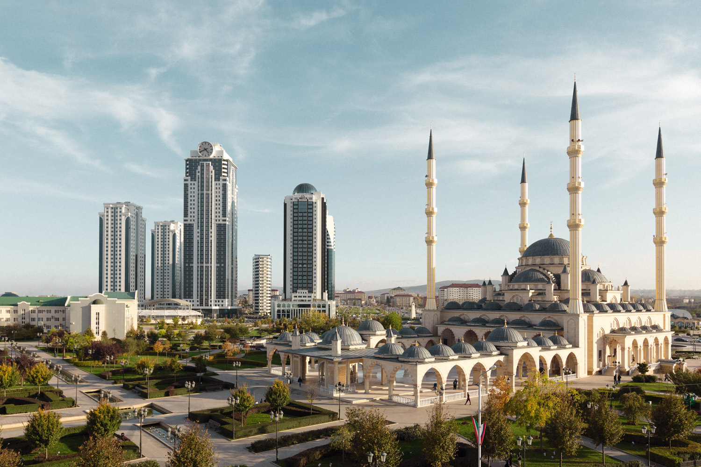

ГОРОД ГРОЗНЫЙ
Грозный – столица Чеченской республики, город с драматической историей, переживший многочисленные войны, депортацию, разрушения. В 90-е годы XX века город был практически полностью разрушен. Сейчас это современный бурноразвивающийся город, он интересен прежде всего своими новыми зданиями и сооружениями. Грозный безопасен для туристов, а чеченцы – один из самых гостеприимных народов России.
